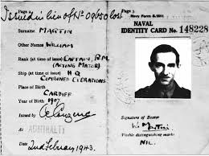
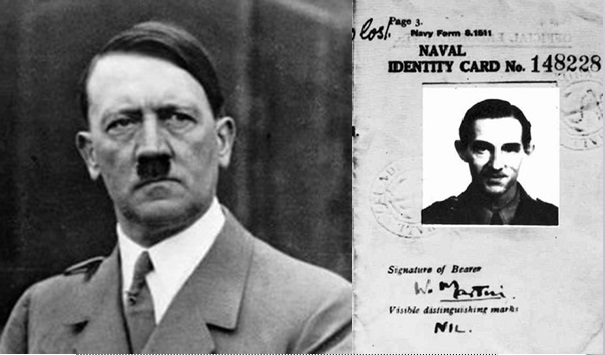
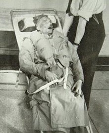
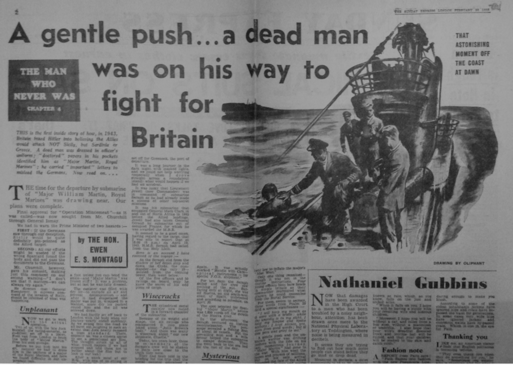
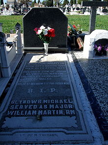

© No copyright but please give credits
It's not often that you see a gravestone with a correction on it.
But then, it's not often that you find a story as strange as this one.
This story is from just outside Huelva, in southern Spain,
, a little distance away from the grave of the Man Who Never Was.
In 1943, as the Second World War raged on,
the body of Major William Martin, of the British Royal Marines,
was discovered floating off the coast here.
Chained to him was a briefcase, and in it: 
a letter with details about
the Allied armies' plans to attack Greece across the Mediterranean Sea.
It was not a "here is all our secret war plans details." type letter,
it was a friendly letter between generals
that gave away all the necessary details.
British Intelligence rushed to recover the briefcase
before German spies could look through it,
but Alas? they were too late.
Yes, Britain got its documents back:
but not before a copy of them was on its way to Hitler,
who then moved huge numbers of troops, tanks and boats to Greece,
ready to repel the British attack.

(But but but, how the turntables)
Hitler was probably quite surprised, when the Allies (Britian) attacked Sicily,
off the southern coast of Italy, and not Greece.
And won, with a fraction of the losses that they could have suffered. (Yes, that letter was fabricated intentionally.)
There never was any Major William Martin.
He was fictional.
But there was a man called Glyndwr Michael.
He was a Welshman in London in World War 2,
homeless, penniless, friendless.
He died on the streets after eating poison;
perhaps deliberately, perhaps by desperately eating food that was left out for rats. :(
We'll never know.

According to official records,
his body was "removed out of England", and well, that's true:
his body was held in a mortuary for a while,
then dressed in the correct uniform and given painstakingly forged personal documents: a receipt for a wedding ring, a photo and love letter from a fiancée,
a bus ticket, some keys, some other paperwork.
Then the body was put onboard a submarine which sailed to the coast of Spain.
And quietly, on a dark night in April 1943,
the boat's crew let the body drift with the currents.
The plan was called, rather gruesomely, Operation Mincemeat.

And by 1943, the team at Bletchley Park had cracked the Enigma cypher
and were listening to German communications:
less than a month after Glyndwr's body had been released,
the codebreakers intercepted a signal that showed that the scheme had worked perfectly. But at what cost?
Britain took Sicily, used it as a beachhead to get to Italy,
and German war plans were in tatters.
Major Martin, by then, had been buried with full military honours and an appropriate gravestone.
The truth was still top secret.
It wasn't until decades later that his real identity was revealed:
and so the grave was corrected.
Glyndwr Michael., served as Major William Martin.
Rest in peace.